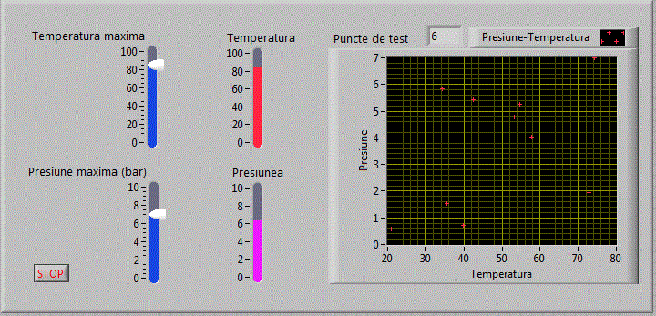
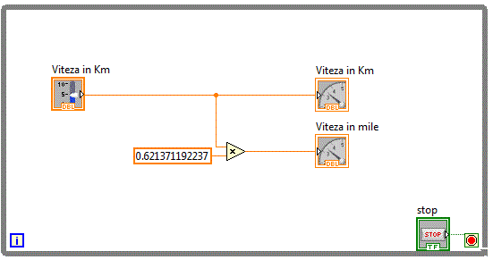

Structura modulara
LabVIEW are o structura ierarhic modulara. Odata creat un VI, acesta poate fi utilizat in cadrul altui VI. Operatia de
includere a unui VI in cadrul altui VI se numeste imbricare. Nu exista o limitare a numarului de nivele de imbricare. Un Vi inclus in interiorul altui VI
se numeste subVI. Un subVI este echivalentul unei functii sau proceduri definite de utilizator.
Sa presupunem ca se utilizeaza des o anumita structura in cadrul unor diagrama bloc. Aceasta structura poate fi definita
intr-un VI si apelata de fiecare data cand e nevoie. De exemplu, de multe ori am folosit functii random penru a obtine valori aleatoare.
Functia oferita in grupul: Functions-->Mathematics-->Numeric-->Random, ofera valori zecimale intre 0 si 1.
Pentru a obtine un numar aleator intr-un domeniu dorit avem nevoie de o sutructura de felul:

Realizarea subVI-urilor
Vom crea un VI rand_max de forma:
Diagrama bloc fiind:
Conectorul si simbolul (icon-ul) unui subVI
Pentru a putea fi utilizat pe post de subVI, unui VI trebuie sa i se editeze simbolul si conectorul. Fiecare VI are atasat
un simbol in coltul stanga sus, in mod special un subVI trebuie sa aiba un simbol distinct, simbolul utilizat in operatia de inserare in cadrul altui VI.
Simbolul subVI-ului este identic cu numele unei functii, nume absolut necesar in momentul cand functia este apelata in cadrul altui program.
SubVI-ul rand_max prezentat mai sus are atasat simbolul:
Simbolul subVI-ului poate fi editat printr-un dublu click pe icon-ul din stanga sus. In cazul de fata pobtinem:

Intrand astfel in aplicatia "Icon Editor", aplicatie care dispune de suficiente unelte intuitive pentru editarea
unui simbol cat mai reprezentativ pentru subVI-ul asociat.
La fel cum unei functii i se definesc parametrii de intrare si valorile returnate, unui subVI i se definesc introrile si
iesirile prin intermediul conectorului. Pentru a configura conectorul se realizeaza click-dreapta pe icon si se alege "Show Connector" si obtinem:
In functie de cate intrari si cate iesiri are subVI-ul, se alege in mod corespunzator "Patternul" prin operatiunea
Click dreapta apoi aleg Pattern.
In cazul de fata, avand o singura intrare si o singura iesire, se alege patternul incercuit.
Urmeaza operatiunea de atribuire prin care intrarilor din conector li se atribuie "controalele" de intrare iar
iesirilor din conector li se atribuie "controalele" de iesire. Operatia se face utilizand "Connect Wire" din Tools si realizand un Click pe zona
dorita din conector, urmata de click pe controlul dorit. Vom atribui deci celulei de intrare din conector controlul "Val_max" si celulei de
iesire din conector, controlul "Val_out".
Utilizare subVI-uri
Vom utiliza in continuare subVI-ul rand_max pentru a crea aplicatia
pr_mod_v0 care simuleaza un turometru a carei viteza maxima poate fi setata de utilizator.
Diagrama bloc fiind:
Bazandu-ne in continuare pe subVI-ul rand_max vom realiza o noua aplicatie
pr_mod_v1 care simuleaza variatia presiunii si temperaturii intr-un domeniu stabilit de
utilizator
Diagrama logica va contine doua apleuri ale subVI-ul rand_max
Sa presupunem ca avem de testat comportamentul unui sistem la diferite conditii de mediu cum ar fi diferite
temperaturi si presiuni. Acesti doi parametrii variaza intr-un interval prestabilit. Este imposibil sa testam sistemul pentru toate vaorile
posibile ale celor doi parametrii. Sa presupunem ca se vor alege aleator 10 perechi de parametrii pentru care se va testa sistemul. Urmatoarea
aplicatie pr_mod_v2 alege si traseaza grafic cele zece perechi de valori.

Aplicatia se bazeaza iarasi pe subVI-ul rand_max
Afisarea perechilor de valori s-a facut prin intermediul controlului grafic "XY Graph" care asteapta doua tablouri,
intr-un tablou sunt memorate valorile lui x iar in celalalt tablou valorile lui y. Cele doua tablouri sunt impachetate intr-un singur cluster folosind
o functie "Bundel".
Realizarea rapida a subVI-urilor
Sa presupunem ca am realizat aplicatia pr_mod_v3 care
permite afisarea simultana a vitezei in Km/h respectiv Mile/h.
Diagrama bloc fiind relativ simpla avand forma:

Observam ca structura care calculeaza viteza in mile este utila si vrem sa realizam un subVI care sa realizeze
aceasta operatie pentru ca acest subVI sa poata fi apelat si din alte aplicatii.
Vom selecta zona pe care vrem s-o includem in subVI, cu ajutorul mouse-ului.
Din meniul principal, alegem Edit-->Create SubVI, dupa care schema bloc devine:
La salvarea aplicatiei, ni se cere sa salvam subVI-ul ctrat. Vom salva subVI-ul cu numele "km_mile.vi"
km_mile .
Deschidem subVI-ul creat si obtinem:
Avem deci in acest moment un subVI pe care outem sa-l inseram in alte aplicatii. Vom edita in primul rand
simbolul subVI-ului creat dupa care il vom folosi in alte aplicatii.
Dupa editarea simbolului si salvarea subVI-ului, vom deschide aplicatia
pr_mod_v4 si observam noul simbol al subVI-uliui inserat.